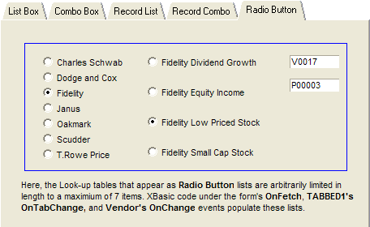

Radio Button Table Lookup
The Radio Button tab of the Table Lookups form contains two radio buttons. There are no field rules or choices defined in object properties. The implementation is based on Xbasic code as follows.
|
Item |
Description |
|
Tabbed2 OnTabChange |
This event refreshes the list of Vendors when the user arrives at the Event Driven tab. The code retrieves a list of Vendors, counts the number of records, and limits the list to a maximum of 7 items (because of the size of the area allocated to radio buttons). |
|
Table_Lookups OnFetch |
This event refreshes the list of Products when the user reads a new record. The script calls a function named Refresh_Products(). |
|
Vendor OnChange |
This event refreshes the list of Products when the user selects a different vendor. The script calls a function named Refresh_Products(). |
|
Refresh_Products() |
This function receives pointers to the Vendor and Product radio button objects. It uses this information to retrieve the appropriate list of Product_Name fields. It limits the list to a maximum of 7 items. |

Tabbed2 OnTabChange Event
|
dim cFieldList as C dim nCounter as N dim nRecordCount as N dim cWord as C ' Get the CR-LF delimited list cFieldList = table.external_record_content_get("Vendor", \ "Vendor_Name + '|' + Vendor_No", "Vendor_Name", "") ' Parameter 1: "Vendor": From the Vendor table ' Parameter 2: "Vendor_Name + '|' + Vendor_No": Two fields ' separated by a pipe character ' Parameter 3: "Vendor_Name": sorted on the Vendor_Name ' field ' Parameter 4: "": no filter required ' Get the number of records returned nRecordCount = w_count(cFieldList, crlf()) ' Limit the number of records to 7 because of the limited amount of space on the form nRecordCount = min(7, nRecordCount) ' Exit if no records if (nRecordCount = 0) then end end if ' redimension the vendor lookup list to nRecordCount items vendor.choice.list.redim(nRecordCount) ' for each of the records for nCounter = 1 to nRecordCount ' retrieve a line of data delimited by a CR-LF cWord = word(cFieldList, nCounter, crlf()) ' retrieve the value that we save, which is the second word on the line vendor.choice.listnCounter.value = word(cWord, 2, "|") ' retrieve the text that we display as the radio button label vendor.choice.listnCounter.text = word(cWord, 1, "|") next nCounter |
Vendor OnChange Event
|
dim vendor_ptr as P dim product_ptr as P dim nRecordCount as N ' create pointers to the two radio buttons vendor_ptr = Vendor.this product_ptr = Product.this ' call the function that refreshes the product radio button nRecordCount = refresh_products(vendor_ptr, product_ptr) |
Table Lookups OnFetch Event
|
dim vendor_ptr as P dim product_ptr as P dim nRecordCount as N ' create pointers to the two radio buttons vendor_ptr = Vendor.this product_ptr = Product.this ' call the function that refreshes the product radio button nRecordCount = refresh_products(vendor_ptr, product_ptr) |
Refresh_Products() function
|
' The function receives pointers to Vendor and Product FUNCTION Refresh_Products as C (Vendor as P, Product as P) dim cFieldList as C dim nCounter as N dim nRecordCount as N dim cWord as C dim cVendor as C ' Get the current value of the vendor radio button cVendor = Vendor.value ' Get the CR-LF delimited list cFieldList = table.external_record_content_get("Product",\ "Product_Name + '|' + Product_No","Product_Name",\ "Product_Vendor_No = " + quote(cVendor)) ' Parameter 1: "Product": From the Product table ' Parameter 2: "Product_Name + '|' + Product_No": Two ' fields separated by a pipe character ' Parameter 3: "Product_Name": sorted on the Product_Name ' field ' Parameter 4: "Product_Vendor_No = " + quote(cVendor): ' vendor must match ' Get the number of records returned nRecordCount = w_count(cFieldList,crlf()) ' Exit if there are no records if (nRecordCount = 0) then end end if ' Limit the number of records to 7 because of the limited amount of space on the form nRecordCount = min(7, nRecordCount) ' redimension the vendor lookup list to nRecordCount items Product.choice.list.redim(nRecordCount) ' for each of the records for nCounter = 1 to nRecordCount ' retrieve a line of data delimited by a CR-LF cWord = word(cFieldList, nCounter, crlf()) ' retrieve the value that we save, which is the ' second word on the line Product.choice.listnCounter.value = word(cWord, 2, "|") ' retrieve the text that we display as the radio ' button label Product.choice.listnCounter.text = word(cWord, 1, "|") next nCounter END FUNCTION |
See Also
Overview of Development Approaches, Using Field Rules for Table Lookups, Using Object Properties for Table Lookups, List Box Table Lookup